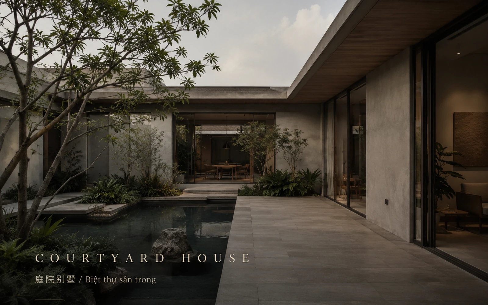
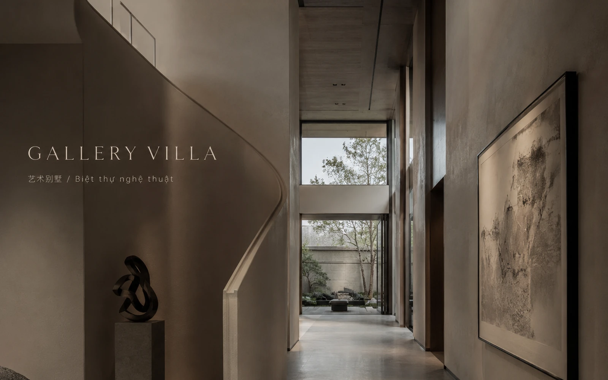
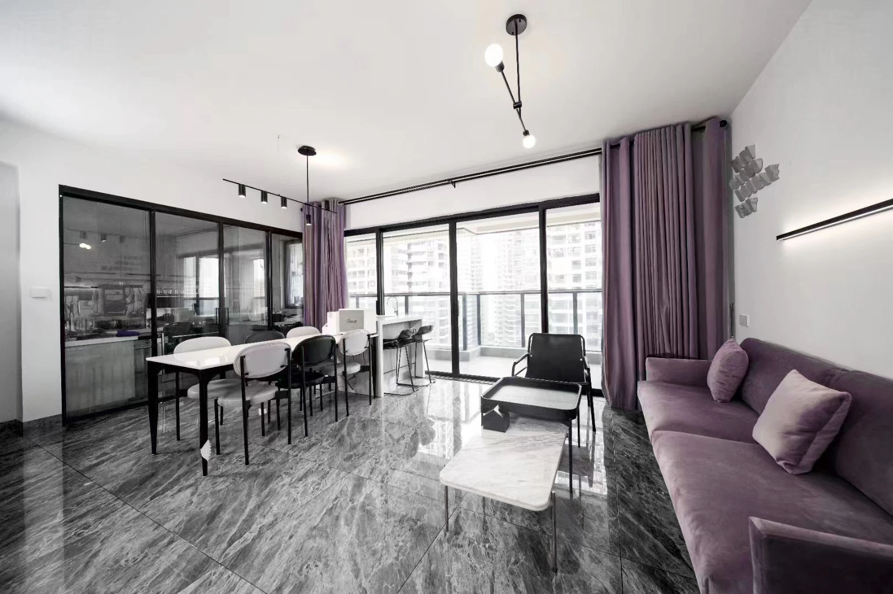
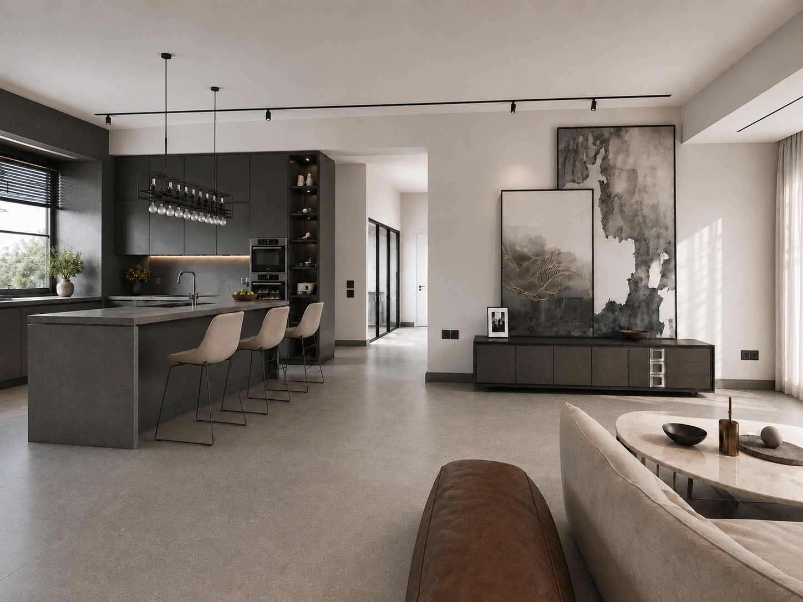
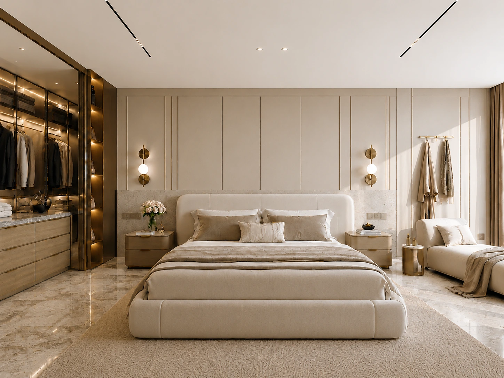
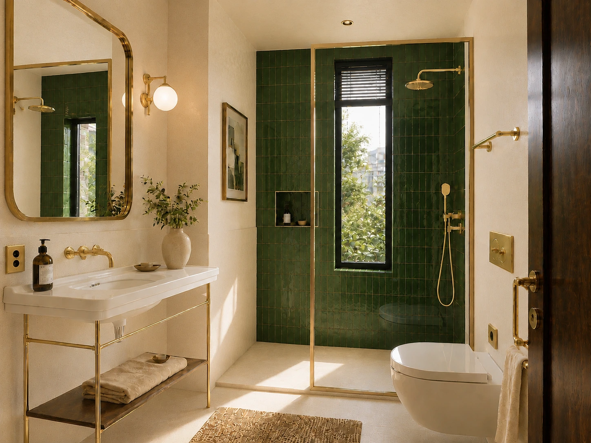
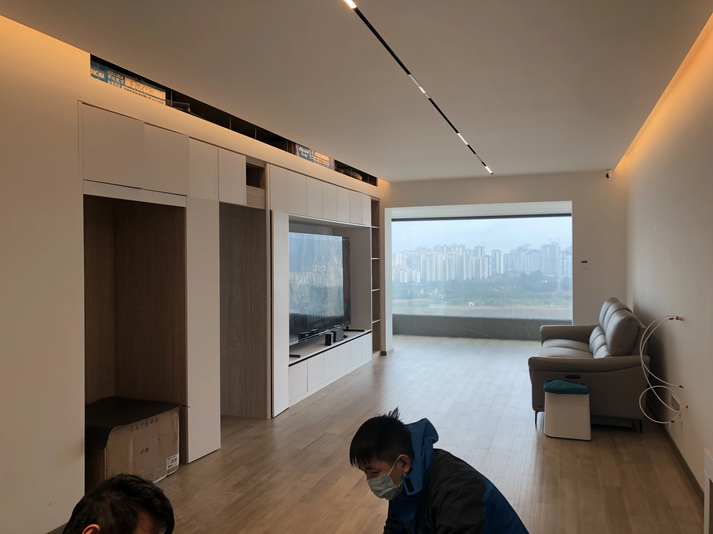
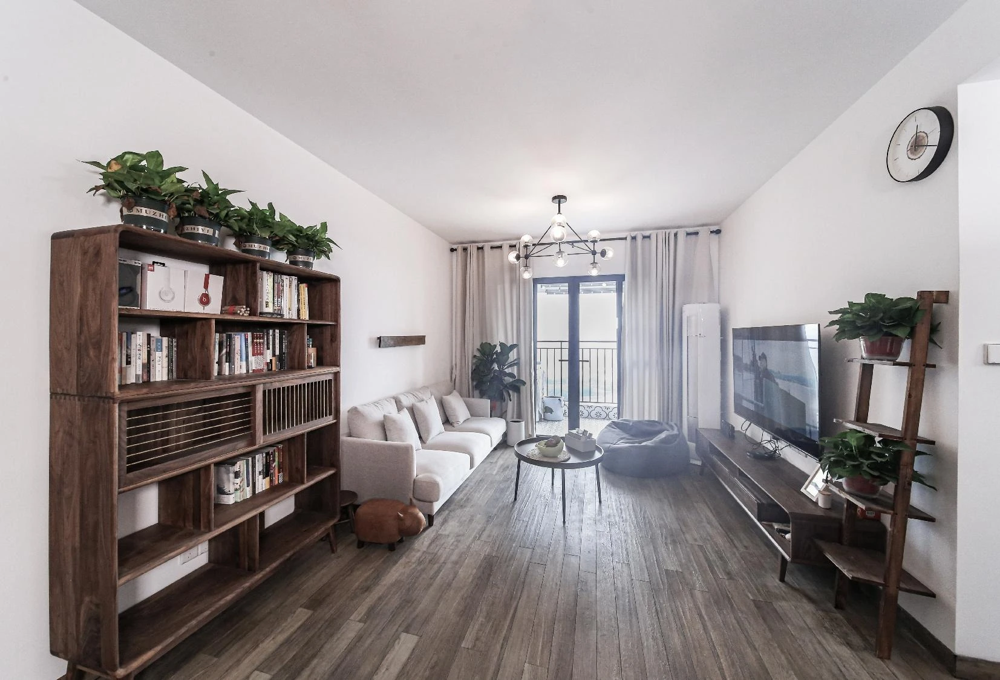

SELECTED PRIVATE RESIDENCES
住宅与别墅精选
NỘI THẤT NHÀ Ở & BIỆT THỰ CHỌN LỌC
RESIDENTIAL
INTERIORS
以前置两栋别墅概念封面建立完整住宅设计尺度，随后呈现8个住宅室内项目。
Two villa concept covers open the collection, followed by eight completed residential interiors.
ARCHIVE 01—10
PRIVATE SPACES,
PRIVATE SPACES,
DIFFERENT LIVES.
两栋别墅概念封面置于前列，随后为8个已完成住宅室内项目。

01↗
COURTYARD HOUSE
庭院别墅 / Biệt thự sân trong

02↗
GALLERY VILLA
艺术别墅 / Biệt thự nghệ thuật

03↗
KITCHEN AS COMMON GROUND
以厨房为生活核心 / Gian bếp là trung tâm sinh hoạt

04↗
BLUE–GREY ORDER
蓝灰秩序 / Trật tự xanh xám

05↗
GREY CONTINUUM
灰域连续体 / Dải không gian xám

06↗
STONE & STILLNESS
石材与静谧 / Đá và tĩnh lặng

07↗
LIGHT, WOOD, GREEN
光、木与绿意 / Ánh sáng, gỗ và cây xanh

08↗
GREEN VELVET STUDY
绿绒与书房 / Nhung xanh và phòng làm việc

09↗
A HOME AT DUSK
暮色中的家 / Ngôi nhà lúc chạng vạng

10↗
OPEN THRESHOLDS
通透边界 / Ranh giới thông thoáng
A home becomes complete
when life enters naturally.